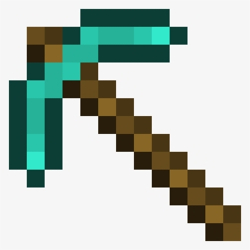

Minecraft is a 2011 sandbox game developed by Mojang Studios. The game was created by Markus "Notch" Persson in the Java programming language. Following several early private testing versions, it was first made public in May 2009 before being fully released in November 2011, with Notch stepping down and Jens "Jeb" Bergensten taking over development. Minecraft is the best-selling video game in history, with over 238 million copies sold and nearly 140 million monthly active players as of 2021 and has been ported to several platforms. In Minecraft, players explore a blocky, procedurally generated, three-dimensional world with virtually infinite terrain and may discover and extract raw materials, craft tools and items, and build structures, earthworks, and machines. Depending on their chosen game mode, players can fight hostile mobs, as well as cooperate with or compete against other players in the same world. Game modes include a survival mode (in which players must acquire resources to build in the world and maintain health) and a creative mode (in which players have unlimited resources and access to flight). The game's large community also offers a wide variety of user-generated content, such as modifications, servers, skins, texture packs, and custom maps, which add new game mechanics and possibilities. Minecraft has received critical acclaim, winning several awards and later being cited as one of the greatest video games ever created. Social media, parodies, adaptations, merchandise, and the annual Minecon conventions played prominent roles in popularizing the game. The game has also been used in educational environments to teach chemistry, computer-aided design, and computer science. In 2014, Mojang and the Minecraft intellectual property were purchased by Microsoft for US$2.5 billion. Several spin-offs have also been made, including Minecraft: Story Mode, Minecraft Dungeons, Minecraft Earth, and the most recent release Minecraft Legends.
